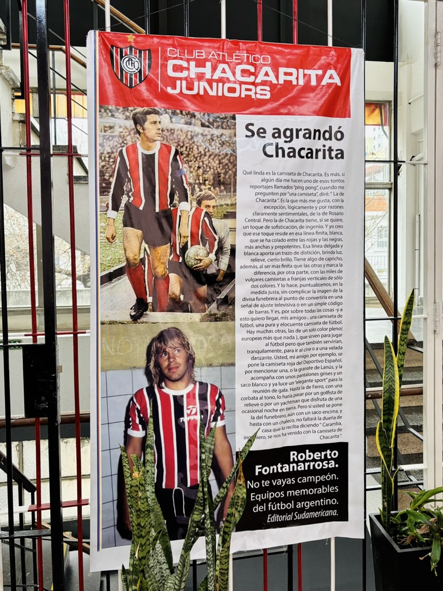
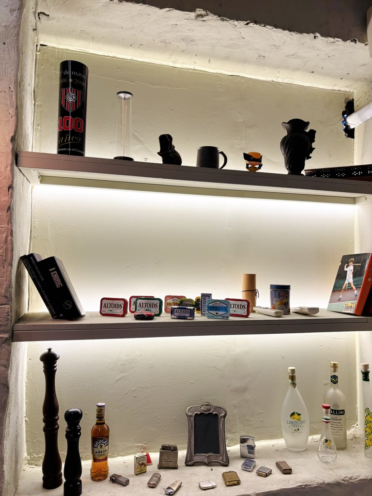
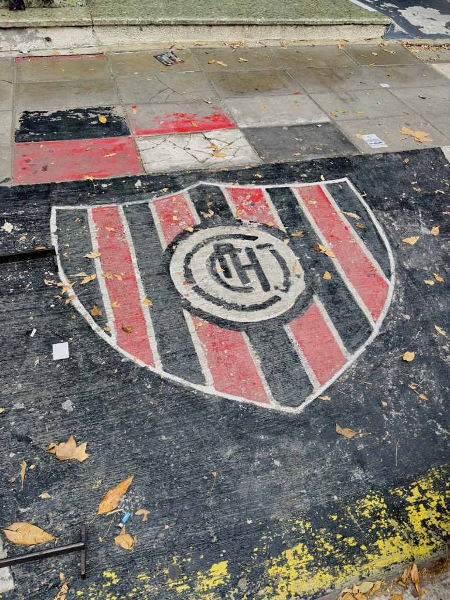
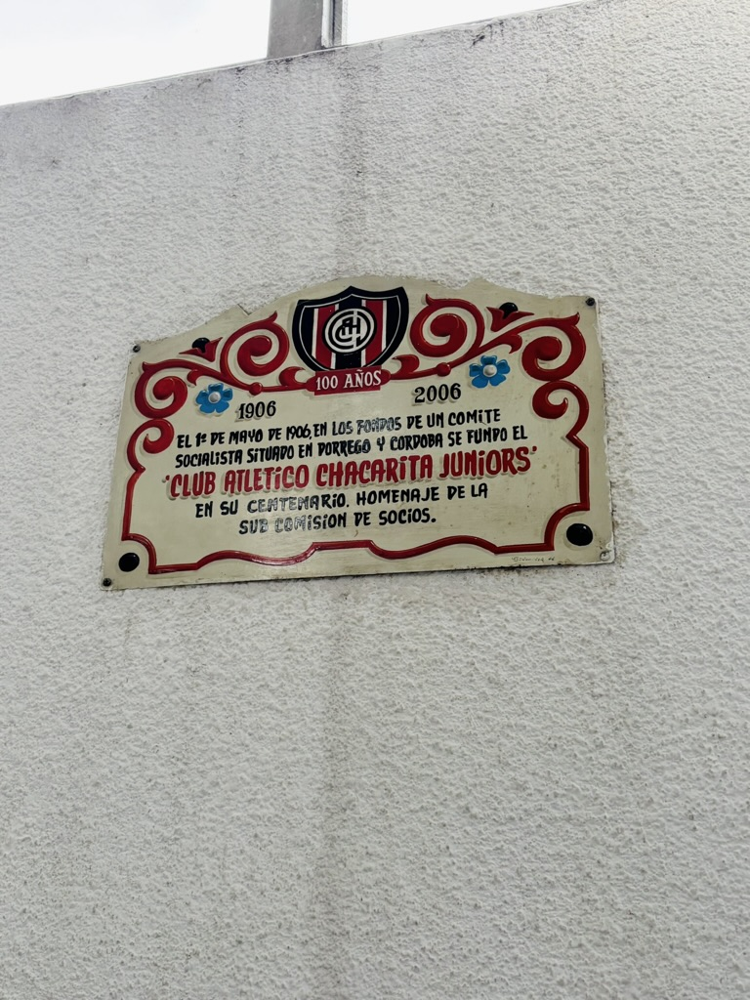
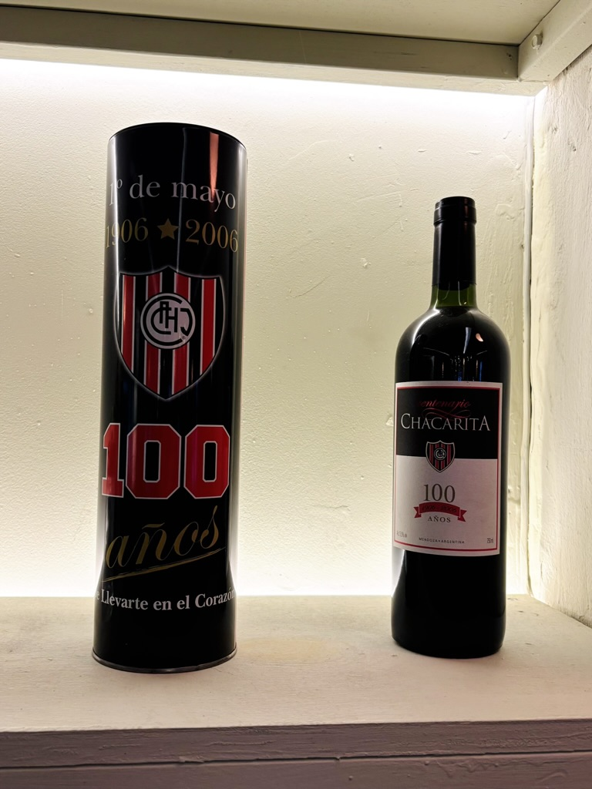

Una cuestión personal
Unidos por la pasión
Siempre me llamó la atención la pasión que algunas personas sentimos por un club de fútbol. No solamente el entusiasmo que genera un triunfo o la frustración de una derrota, sino algo mucho más profundo: la identidad que nos une a los fanáticos, con ese orgullo y sentido de pertenencia, incluso cuando los resultados deportivos no acompañan.
Como hincha del club Gimnasia y Esgrima La Plata, reconozco esa sensación. Existe algo difícil de explicar racionalmente que hace que el vínculo con un club exceda ampliamente el deporte. Es una forma de habitar una historia, de compartir símbolos, rituales y emociones con el otro. Es una identidad que se construye colectivamente, que nos conecta con los seres que mas amamos.
Es así, como a lo largo de este artículo haremos un recorrido por aquello que relaciona al club Chacarita Juniors, que tanto representa esa pasión, con el barrio Chacarita que es aquel que le ha dado origen y ha permitido ese habitar.
Hipótesis
El Club Chacarita Juniors refleja las transformaciones culturales y estéticas del barrio de Chacarita, donde las prácticas tradicionales vinculadas al fútbol y al sentido de pertenencia continúan vigentes, pero son reinterpretadas desde nuevas formas de habitar y representar la identidad barrial.
La frase “se agrandó Chacarita” evidencia un orgullo colectivo que trasciende el éxito deportivo y se sostiene en la construcción simbólica del hincha como parte de una comunidad con códigos propios.
En este contexto, el “rehabitar” aparece en la permanencia de rituales históricos como la previa, la cancha, el encuentro en la calle o el bar, que hoy son apropiados también por nuevas generaciones y por una cultura contemporánea que vuelve “cool” aquello tradicional y popular.
A su vez, lo performático se manifiesta en cómo el ser hincha deja de ser solamente una experiencia espontánea para convertirse también en una representación estética y visual, una puesta en escena de la identidad colectiva.
Metodología
Entrevistas y observación
Para la realización de este trabajo se utilizaron entrevistas semiestructuradas a dos hinchas de Chacarita Juniors con diferentes trayectorias y formas de vinculación con el club.
- Manuel Picallo: amigo personal e hincha fanático de Chacarita Juniors. Entrevista realizada el día 30/05/2026 vía WhatsApp. Su testimonio aporta una mirada vinculada a la transmisión familiar, el orgullo cotidiano y la experiencia emocional de pertenecer.
- Jorge Albarracín, “ChacaYoSoy” en Instagram: conocido streamer y fanático del fútbol. Entrevista realizada el día 3/06/2026 vía mail. Su testimonio permite abordar la construcción simbólica de la identidad funebrera, la memoria colectiva y las nuevas formas de representación de la cultura del club.
Por otro lado, he realizado una observación de campo a partir de material fotográfico propio, centrado en objetos, carteles, colores y espacios que funcionan como marcas visibles de la identidad del club.
“Chacarita es más grande que lo que los títulos dicen.”Jorge Albarracín, 2026
I
“Se agrandó Chacarita”
Muchos citamos esta famosa frase en diferentes contextos, pero... ¿alguna vez te preguntaste de donde viene?; quizás pensamos que tiene que ver con una característica del hincha de ser "agrandado", llevando a algo más superficial. Pero en esta entrevista, Jorge Albarracín señala que existen distintas versiones sobre el origen de la frase:
“Hay dos cosas a las que se le atribuye esa frase (...) era un barrio que se llamaba ‘La Chacarita de los Colegiales’ y pasó a ser Chacarita y Colegiales (...) también se relaciona con aquel triunfo histórico frente a Boca.”
(Albarracín, 2026)
Más que verificar una única versión histórica, interesa observar cómo la frase funciona como mito, relato colectivo y forma de autoafirmación. La expresión condensa una identidad orgullosa: nombra a un club que, aun sin ocupar el lugar de los llamados “grandes”, se reconoce a sí mismo como portador de una historia y una comunidad propia.

La frase como relato identitario.
II
Un barrio en transformación
En los últimos años, el barrio de Chacarita experimentó una importante transformación urbana y cultural. Históricamente asociado a sus casas bajas, sus calles arboladas, el Cementerio de la Chacarita, la inmigración y una fuerte identidad barrial, comenzó a atraer nuevas generaciones de residentes, emprendimientos gastronómicos, espacios culturales y proyectos inmobiliarios.
Esta transformación fue reconocida internacionalmente cuando la revista británica Time Out ubicó a Chacarita entre los barrios más “cool” del mundo, destacando su vida cultural, su oferta gastronómica, su ambiente comunitario y la convivencia entre elementos de la vieja y la nueva escuela.
En este contexto, Chacarita Juniors ocupa un lugar singular. Mientras el barrio se reinventa, el club continúa funcionando como un espacio de referencia identitaria para distintas generaciones de hinchas. La permanencia de rituales, símbolos y relatos colectivos permite observar cómo ciertas formas de pertenencia sobreviven a los procesos de transformación urbana.
Así como el barrio de Chacarita resignifica elementos de su pasado para construir una nueva identidad urbana, los hinchas recuperan símbolos, camisetas y objetos históricos para expresar una pertenencia que combina memoria y contemporaneidad.
III
La estética de pertenecer
Una de las dimensiones más fuertes del caso de estudio Chacarita es la estética. Ser de "Chaca" aparece como una forma de sentir, pero también como una forma de mostrarse. Manuel Picallo lo expresa al vincular la identidad del hincha con la historia del club. Vemos como de alguna forma lo "retro" que menciona, es una huella de aquello que fue y se trae al presente con orgullo para mostrarlo a un otro.
“Ser de Chaca de alguna manera es medio una forma de mostrarse (...) hay mucha identificación con toda la historia que tiene Chacarita (...) por eso hay muchas camisetas retro y todo.”
(Picallo, 2026)
Albarracín, por su parte, agrega que el hincha de Chacarita es identificable, que se diferencia de otros clubes de una manera genuina.
“El hincha de Chacarita de por sí es identificable, pero no porque se quiera hacer notar sino porque sale de manera natural.”
(Albarracín, 2026)
Las camisetas retro, los objetos vintage, las placas, el vino conmemorativo, los colores rojo, blanco y negro y el escudo pintado en la calle muestran que la identidad no solo se siente: también se viste, se exhibe, se conserva, se fotografía y se comparte.
“Hay algo que nunca se puede explicar: la onda.”Jorge Albarracín, 2026
IV
Rehabitar
El “rehabitar” en Chacarita aparece en la permanencia de rituales históricos: la previa, el encuentro en la calle, la cancha, el bar, la comida compartida y las cábalas. Estas prácticas no se conservan de manera intacta, sino que se actualizan en nuevos contextos y por nuevas generaciones.
“El hincha nace de los padres.”
(Picallo, 2026)
La transmisión familiar ocupa un lugar central. Para Picallo, la pertenencia aparece ligada a la herencia de su padre y a una historia familiar asociada al barrio. En ese sentido, ser hincha no es solamente elegir un club, sino recibir una memoria y volver a ponerla en práctica.
“Tuvo que emigrar, hacer su estadio desde cero y eso te va generando mucho mayor vínculo.”
(Albarracín, 2026)
La idea de emigrar y reconstruir permite pensar al club como un espacio que fue habitado, perdido, desplazado y vuelto a construir. Chacarita no solo se habita en un territorio físico: también se habita en relatos, rituales y vínculos afectivos.

El club como lugar de encuentro, memoria y permanencia.
V
Lo performático en los rituales de la previa a un partido
Más allá del encuentro deportivo, la pertenencia se construye en acciones repetidas, espacios ocupados de manera habitual y gestos que cada hincha incorpora a su rutina. La previa funciona así como un momento de preparación simbólica donde la identidad colectiva comienza a ponerse en escena.
“Hay algunas previas, o por lo menos en mi casa algunos rituales, tenemos ciertos lugares que cada uno tiene... o me junto con mi hermano y mi viejo a ver los partidos, cada uno tiene su silloncito especial, medio unas cábalas que cada uno sigue propias.”
(Manuel Picallo, 2026)
“Últimamente es juntarme antes, comer algo a la parrilla y arrancar.”
(Jorge Albarracín, 2026)
En ambos casos, la previa aparece como una práctica cotidiana que trasciende el partido en sí mismo. Los encuentros familiares, las cábalas y las comidas compartidas funcionan como formas de sostener la pertenencia y de actualizar, una y otra vez, la identidad funebrera.
VI
Jóvenes, autenticidad y nuevas formas de pertenecer
La pregunta por los jóvenes permite observar la tensión entre continuidad y transformación.
“Para mí Chacarita hoy en los jóvenes representa más que nada un club auténtico (...) lejos de ser un equipo de los grandes, pero orgulloso de sí mismo.”
(Picallo, 2026)
Esta mirada permite pensar que la identidad funebrera no se sostiene solamente en los hinchas históricos. También es apropiada por jóvenes que encuentran en el club una estética, una historia y una forma de pertenencia que se diferencia de las lógicas más masivas del fútbol contemporáneo.
Diferentes perspectivas
Desde una mirada de un hincha con más trayectoria y análisis a nivel contextual, podemos ver como Albarracín sostiene: "Hay que invitarlos a los pibes a que pertenezcan a una cultura de cancha en la cual se sientan necesarios para formarse y participar de los clubes, porque si no esto se va a volver un elemento de suscripción donde simplemente el futbol va a pasar a ser algo más de las aristas de la vida de las personas; y el fútbol no solamente es la industria más importante a nivel mundial, si no que es lo que realmente despierta pasiones en los clubes acá en Argentina y es lo que hace que siempre haya algo para hablar".
Aunque la identidad de Chacarita mantiene una fuerte continuidad histórica, también aparecen desafíos vinculados a las nuevas formas de consumo cultural y deportivo. La pertenencia ya no puede darse por sentada: necesita ser transmitida, representada y reconstruida.
VII
El orgullo como resistencia
El orgullo aparece en las entrevistas como una dimensión que excede los resultados deportivos. No se trata de reconstruir una historia estadística del club, sino de comprender cómo los hinchas producen una idea de grandeza desde la permanencia, la lealtad y la resistencia.
“No se achica por más de no ser un club grande.”
(Picallo, 2026)
“Chacarita es, fue y va a ser toda la vida más grande que lo que los títulos dicen. Ser de Chacarita es un orgullo futbolístico, es un orgullo popular.”
(Albarracín, 2026)
“Ser de Chacarita en tiempos como hoy, es contracultural.”
(Albarracín, 2026)
Esta última frase me invita a la reflexión. La idea de "contracultura" suele asociarse a ir en contra de ciertos valores establecidos y aceptados socialmente. Y, en algún punto, siento que hay algo de eso; vivimos en una época donde muchas veces parece importar más el éxito, la imagen o el reconocimiento que la construcción de vínculos duraderos. Y eso se ve reflejado en el fútbol, estan quienes eligen un club porque está de moda, porque le va bien o porque representa algo que resulta atractivo mostrar a un otro.
Sin embargo, al escuchar a los hinchas de Chacarita, aparece otra lógica. No parece importar demasiado si el equipo atraviesa un buen o un mal momento, ni si desde afuera esa elección puede ser vista como menos prestigiosa o difícil de entender. Hay algo que pesa más. Existen formas de pertenecer que no dependen del éxito, sino de una convicción afectiva que permanece incluso cuando no hay nada que ganar. Una identidad que, simplemente, no se abandona.
Observación de campo
Registro
Durante el recorrido fue posible observar la presencia constante de símbolos vinculados a Chacarita Juniors. Escudos, placas, objetos conmemorativos, colores y frases históricas aparecen integrados al espacio cotidiano, transformando distintos rincones del barrio y del club en soportes materiales de la memoria colectiva.
Más que elementos decorativos, estos objetos funcionan como marcas visibles de una identidad que excede lo deportivo. La pertenencia se expresa en la conservación de recuerdos, en la exhibición de símbolos y en la apropiación cotidiana de elementos que permiten mantener viva la historia compartida.



Conclusión
Una comunidad simbólica
Más que un club de fútbol, Chacarita Juniors aparece como una comunidad simbólica que produce sentidos, memorias y formas de pertenencia. La vigencia de expresiones como “Se agrandó Chacarita”, la permanencia de rituales compartidos y la presencia de símbolos materiales permiten observar cómo la identidad colectiva continúa siendo habitada, representada y resignificada por distintas generaciones de hinchas.
El caso de Chacarita permite ver que la cultura futbolera no se limita al resultado deportivo ni a la competencia. También se construye en los modos de habitar un barrio, en los relatos familiares, en las formas de mostrarse, en los objetos que conservan memoria y en la capacidad de sostener orgullo incluso cuando el presente deportivo no siempre acompaña.
A nivel personal, una de las cosas que me ha resultado más valiosa de este trabajo fue la posibilidad de acercarme de manera más profunda a una pasión y a una forma de vivir que, si bien es ajena a mi realidad cotidiana, me permitió encontrar muchos puntos de conexión. Escuchar las historias, los recuerdos y los rituales de los hinchas me llevó a empatizar de una manera muy genuina con aquello que los moviliza. Entendiendo que hay sentimientos que trascienden los clubes y hablan de algo profundamente humano.
Y por último, este recorrido también me permitió reafirmar una idea que atraviesa gran parte de mi formación e intereses: no importa cuánto sepamos de estética, diseño o moda, constantemente estamos comunicando algo a través de la forma en que habitamos los espacios, nos mostramos y nos vinculamos con ciertos objetos. Muchas veces no somos plenamente conscientes de ello, pero esos gestos, símbolos y elecciones funcionan como signos que hablan de quiénes somos y de la realidad que construimos colectivamente. En el caso de Chacarita, las camisetas retro que se mencionan por ejemplo, o los espacios y objetos observados no son simples elementos decorativos o anecdóticos; son expresiones visibles de una identidad que continúa viva y que encuentra nuevas formas de manifestarse sin perder su vínculo con la historia.
Fuentes y referencias
Entrevistas personales: Manuel Picallo, entrevista personal, 2026. Jorge Albarracín, “ChacaYoSoy”, entrevista personal, 2026.
Material de contexto barrial: información sobre la historia del barrio de Chacarita, su origen como “Chacarita de los Colegiales”, el Cementerio de la Chacarita, el Distrito Audiovisual y notas periodísticas sobre su transformación urbana y cultural, incluyendo el reconocimiento de Time Out.
Trabajo de campo: registro fotográfico propio de objetos, espacios, colores y marcas visuales vinculadas a Chacarita Juniors.
Fuentes documentales incorporadas:
- Club Atlético Chacarita Juniors. Historia oficial de Chacarita Juniors.
- Infobae (2021). “Se agrandó Chacarita”: historia de un proverbio popular que une a Carlitos Balá con Facundo Campazzo.